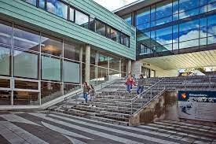
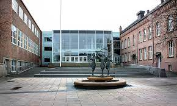

Den tidligste tiden
Kirkeparken videregående skole startet sin historie i 1832 under navnet «Moss borgerlige realskole» med 36 gutter og 3 lærere. En av initiativtakerne var daværende byfogd David Vogt. Målet med undervisningen var å skape barna om til opplyste medlemmer av «Borgersamfunnet» og var på mange måter en forberedelsesskole for handelsborgerne – mer en handelsskole enn en lærd skole.
Fra 1839 fikk skolen en nybygd tømmerbygning midt i byen, på samme tomt som skolen står i dag.
Etter en nasjonal lov om offentlige skoler for den høyere allmenndanning ble skolen i 1874 omskapt til «Moss kommunale Middelskole».Det var fortsatt en skole for de få privilegerte og skolepengene lå på 5000 – 8000 kr pr år, en formue i de dager.
Et nytt skolebygg i teglstein sto ferdig i 1882, nemlig dagens B-bygg som huser skolens ledelse, administrasjon, elevtjeneste og TO avdelingen (+ noen undervisningsrom). Bygningen hentet elementer fra sin nærmeste nabo, byens kirke.
I perioden frem til en ny lov om høyere allmennskoler i 1896 gikk skolen fra å være en niårig skole 6 – 15 år til å bli en fireårig middelskole med 11 – 15 åringer i 1897. Skolen skiftet navn til «Moss kommunale høiere skole». Nå ble det også en fellesskole hvor jenter også hadde adgang. I 1897 var det 122 gutter og 104 jenter. Skolen var fortsatt sterkt knyttet til borgerstanden.
I fabrikkbyen Moss ble det ut over 1900 tallet gitt undervisning til gutter og jenter i en treårig utdanning, 12 – 15 år. Skolen ble bygd ut i 1910. Etter en reform i 1920 årene hadde skolen fra 1925 et tilbud til 14 – 16 åringer. Skolepengene ble fjernet i 1920 for elever fra Moss, utenbys måtte fortsatt betale.
I 1939 hadde skolen 74 gymnasiaster og 293 middelskoleelever.
I 1941 sto Idrettens hus ferdig rett ved skolen og elevene hadde fysisk fostring i 1 etasje og sløydsal i kjelleren.
I krigsårene ble skolen drevet under vekslende forhold. Tyskerne okkuperte i perioder skolebygningen, slik at skolen ble drevet i andre lokaler.
Fra 1950-tallet og senere
I perioden etter krigen vokste elevtallet voldsomt og skolen ble overfylt. I 1959 var elevtallet på topp med 800 elever. Da var allerede mange elever avvist og det ble gjennomført loddtrekning mellom elever som stilte likt karaktermessig. Lærerne måtte løpe mellom fem forskjellige steder hvor det foregikk undervisning.
Bytårnet skole ble bygget i 1961. Moss realskole flyttet inn der og avlastet på den måten vår skole. Endringene i innhold førte også til en navneendring i 1964 til «Moss gymnas». Det ble også vedtatt å bygge ut skolen, og i 1965 sto midtbygget ferdig.
På begynnelsen av 1970 tallet hadde skolen 500 elever og 50 lærere.
I 1976 skiftet alle videregående skoler i Østfold navn. Fra nå av skulle alle skolene ha «videregående skole» i sitt navn.
Moss handelsskole og Moss yrkesskole ble til Malakoff videregående skole. Moss gymnas ble til Kirkeparken videregående skole.
Kirkeparken seilte av gårde frem til 1989 hvor reformen fra 1976 skulle justeres og fordeling av timer igjen skulle omorganiseres. Det var for mange elever som valgte bort realfag og fremmedspråk.
Mosseporten vgs ble lagt ned i 2001 og studieplassene ble fordelt mellom Malakoff og Kirkeparken vgs. som fikk sitt første yrkesfaglige tilbud noensinne og ble dermed en kombinert skole.
I dag
Byggingen av ny Kirkeparken startet i 2006 og skolen sto ferdig i sin nåværende form med 22000 kvm i 2009.
Skolen har i dag ca. 1000 elever og ca. 180 ansatte.
Skolens navn gjennom historien
1832 – 1874 Moss borgerlige Realskole
1874 – 1897 Moss Middelskole
1897 – 1957 Moss kommunale høiere skole
1957 – 1964 Moss interkommunale høgre skole
1964 – 1976 Moss gymnas
1976 – dd Kirkeparken videregående skole
Kirkeparken er et gammelt gymnas, og mye av kulturen og tradisjonene sitter i veggene. Det er stolte tradisjoner som man ikke uten videre bytter ut. Tidligere elever og ansatte føler en meget sterk og stolt tilknytning til skolen.
Samtidig som vi tar vare på tradisjonene våre må vi som skole også utvikle oss. Vi vil gjerne være i forkant av utviklingen; skape en enhetlig og lærende organisasjonskultur som utgangspunkt for et godt arbeidsmiljø og læringsmiljø.